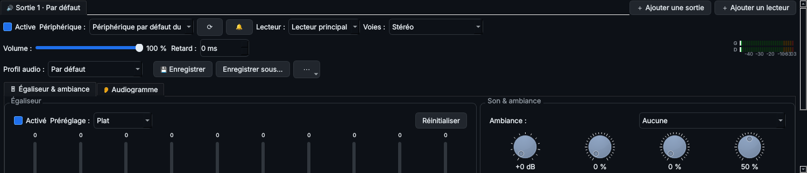

Le panneau Son s'affiche sous la liste des titres (bouton Son, ou Ctrl+G). Il a un onglet par sortie. En haut de chaque sortie se règlent le périphérique, le lecteur diffusé, les voies, le volume, le retard et le profil ; en dessous, deux onglets : Égaliseur & ambiance, et Audiogramme.

| Réglage | Effet |
|---|---|
| Ambiance | Préréglages : Aucune, Petite pièce, Salon, Club, Salle de concert, Live / Stade, Cathédrale, Studio. |
| Renfort de basses | Ajoute de la rondeur sans toucher à l'égaliseur. |
| Surround | Élargit l'image stéréo, surtout au casque. |
| Réverbération et taille de salle | Simule l'écho d'une pièce. |
| Balance | Répartit le son entre gauche et droite. |
| Volume | Bouton rotatif : faites-le tourner à la souris ou à la molette. |
Le vumètre stéréo affiche le niveau de chaque voie, avec maintien de crête. Tous les réglages sont mémorisés.
Un profil regroupe l'égaliseur, l'ambiance, les effets, la balance et l'audiogramme.
Le menu ⋯ permet aussi de renommer, supprimer, importer ou exporter un profil (fichier .json à partager ou à copier sur le Raspberry Pi), et de copier les réglages vers une autre sortie.
Profils fournis : Par défaut, Soirée, Écoute douce (nuit), Concert.